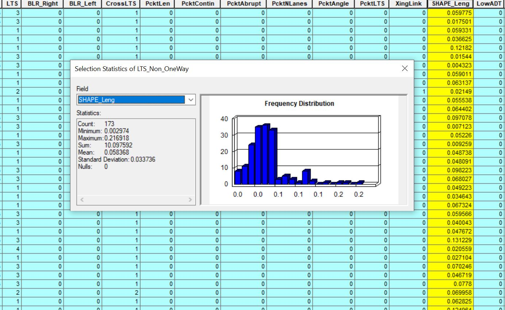

Each year we are asked to give the League of American Bicyclist's updated center-line mile data about our on road bike facilities. Questions about the facilities are separate by facility type, then by speed range. Answers need to be in centerline miles - to reduce double counting, we established a hierarchy of bike facility types:
- Cycletracks and Protected Bike Lanes
- Buffered Bike Lanes
- Regular Bike Lanes
- Sharrows (Class 3A only)
The shapefile used to determine centerline miles for each bike facility is our Level of Traffic Stress (LTS) shapefile. The shapefile is located here:
\\PWAFILE2\Transportation\Bike-Ped_Program\Projects\LTS\GIS\Shapefiles\Current
A List of each Field Headings meanings are found in our Project Documentation (Meanings are at end of Document):
\\PWAFILE2\Transportation\Bike-Ped_Program\Projects\LTS\Admin\Project Documentation\DRAFT_OaklandLTS_ProjectDocumentation-toRonnie.docx
Methodology
- Use bikeway definitions provided in NACTO Bikeway Design Guidelines, then on Oakland's wiki page to determine hierarchy.
- For example, we decided not to report unmarked Class 3 facilities as shared lane markings. Therefore only Class 3A was counted - Bicycle boulevards were counted but not included in the hierarchy as there wasn't any competition between the two sides of the street - they are whole-street treatments
- Separate Class I facilities from all other facilities.
- The League of American Bicyclists did not ask for these numbers by speed limit as they are separated facilities. - Separate One-Way from Two-Way Facilities
- Separate Buffered Bike Lanes from Bike Lanes data
- We decided that wide paved shoulders would not be counted
- All segments with "Right" Directional Buffered Bike Lanes have either Regular or Buffered Bike Lanes on the "Left" side. These were counted as buffered.
- Some segments with "Left" Directional Buffered Bike Lanes have "Right" Facilities with Class 3, 3A, or no bike lanes. Again, these were counted as buffered.
- In all instances on two-way streets where Sharrows ('3A') exist on one side of the road, the other side has sharrows or a bike lane.
- Therefore the lower total is being reported for sharrows - Special calculation was used for Class II non-buffered bike lanes to determine how to calculate.
- We took the "greater" number for each side in all cases except for Class II facilities.
- The formula removes cases where buffered bike lanes are along the same segments as bike lanes, adds the left and right side and divides the total by 2
Questions from 2017 (Questions answered through the use of GIS)
On streets with posted speeds of ≤ 25mph, how many miles of each of the following bicycle facilities are there that meet or exceed current AASHTO or NACTO standards?
Bike boulevards (# only)
Shared lane markings (not counted under Bicycle Boulevards) (# only)
Wide paved shoulders (ridable surface ≥4 feet, and minimum clear path of ≥4 feet between rumble strips) (# only)
Bike lanes (incl. standard, contra-flow, left-side) (ridable surface ≥4 feet) (# only)
Buffered bike lanes (# only)
Protected bike lanes (one-way or two-way) (# only)
Raised cycle tracks (one-way or two-way) (# only)
On streets with posted speeds of > 25mph and ≤ 35mph, how many miles of each of the following bicycle facilities are there that meet or exceed current AASHTO or NACTO standards?
Shared lane markings (# only)
Wide paved shoulders (ridable surface ≥4 feet, and minimum clear path of ≥4 feet between rumble strips) (# only)
Bike lanes (incl. standard, contra-flow, left-side) (ridable surface ≥4 feet) (# only)
Buffered bike lanes (# only)
Protected bike lanes (one-way or two-way) (# only)
Raised cycle tracks (one-way or two-way) (# only)
On streets with posted speeds of > 35mph, how many miles of each of the following bicycle facilities are there that meet or exceed current AASHTO or NACTO standards?
Wide paved shoulders (ridable surface ≥4 feet, and minimum clear path of ≥4 feet between rumble strips) (# only)
Bike lanes (incl. standard, contra-flow, left-side) (ridable surface ≥4 feet) (# only)
Buffered bike lanes (# only)
Protected bike lanes (one-way or two-way) (# only)
Raised cycle tracks (one-way or two-way) (# only)
Select By Attribute for Each Category (Used to Determine Centerline Mileage of each type)
First separate one way streets into a new shapefile. This can be done by running this query and exporting a new shapefile from selected features (Used for one side of street calcs).
"ONEWAY" = 'FT' OR "ONEWAY" = 'TF'
Then create a Shapefile for segments without the one-way tag (Used for both sides of street calcs).
"ONEWAY" = ' '
Bike Boulevards (Class 3B):
L Total: "BIKE_FAC_L" = '3B'
L <=25 mph: "BIKE_FAC_L" = '3B' AND "POSTED_SPD" <= 25
L >25 and <=35 mph: "BIKE_FAC_L" = '3B' AND "POSTED_SPD" > 25 AND "POSTED_SPD" <= 35
L >35 mph: "BIKE_FAC_L" = '3B' AND "POSTED_SPD" > 35
R Total: "BIKE_FAC_R" = '3B'
R <=25 mph: "BIKE_FAC_R" = '3B' AND "POSTED_SPD" <= 25
R >25 and <=35 mph: "BIKE_FAC_R" = '3B' AND "POSTED_SPD" > 25 AND "POSTED_SPD" <= 35
R >35 mph: "BIKE_FAC_R" = '3B' AND "POSTED_SPD" > 35
Sharrows (3A)
L Total: "BIKE_FAC_L" = '3A'
L <=25 mph: "BIKE_FAC_L" = '3A' AND "POSTED_SPD" <= 25
L >25 and <=35 mph: "BIKE_FAC_L" = '3A' AND "POSTED_SPD" > 25 AND "POSTED_SPD" <= 35
L >35 mph: "BIKE_FAC_L" = '3A' AND "POSTED_SPD" > 35
R Total: "BIKE_FAC_R" = '3A'
R <=25 mph: "BIKE_FAC_R" = '3A' AND "POSTED_SPD" <= 25
R >25 and <=35 mph: "BIKE_FAC_R" = '3A' AND "POSTED_SPD" > 25 AND "POSTED_SPD" <= 35
R >35 mph: "BIKE_FAC_R" = '3A' AND "POSTED_SPD" > 35
Bike Lanes (Class 2 [Removed Buffer per side])
L Total: "BIKE_FAC_L" = '2' AND "BIKE_BUF_L" <> 1
L <=25 mph: "BIKE_FAC_L" = '2' AND "BIKE_BUF_L" <> 1 AND "POSTED_SPD" <= 25
L >25 and <=35 mph: "BIKE_FAC_L" = '2' AND "BIKE_BUF_L" <> 1 AND "POSTED_SPD" > 25 AND "POSTED_SPD" <= 35
L >35 mph: "BIKE_FAC_L" = '2' AND "BIKE_BUF_L" <> 1 AND "POSTED_SPD" > 35
R Total: "BIKE_FAC_R" = '2' AND "BIKE_BUF_R" <> 1
R <=25 mph: "BIKE_FAC_R" = '2' AND "BIKE_BUF_R" <> 1 AND "POSTED_SPD" <= 25
R >25 and <=35 mph: "BIKE_FAC_R" = '2' AND "BIKE_BUF_R" <> 1 AND "POSTED_SPD" > 25 AND "POSTED_SPD" <= 35
R >35 mph: "BIKE_FAC_R" = '2' AND "BIKE_BUF_R" <> 1 AND "POSTED_SPD" > 35
Buffered Bike Lanes (Not counted with Bike Lanes)
L Total: "BIKE_BUF_L" = 1 AND "BIKE_FAC_L" <> '2'
L <=25 mph: "BIKE_BUF_L" = 1 AND "BIKE_FAC_L" <> '2' AND "POSTED_SPD" <= 25
L >25 and <=35 mph: "BIKE_BUF_L" = 1 AND "BIKE_FAC_L" <> '2' AND “POSTED_SPD" > 25 AND "POSTED_SPD" <= 35
L >35 mph: "BIKE_BUF_L" = 1 AND "BIKE_FAC_L" <> '2' AND “POSTED_SPD" > 35
R Total: "BIKE_BUF_R" = 1 AND "BIKE_FAC_R" <> '2'
R <=25 mph: "BIKE_BUF_R" = 1 AND "BIKE_FAC_R" <> '2' AND "POSTED_SPD" <= 25
R >25 and <=35 mph: "BIKE_BUF_R" = 1 AND "BIKE_FAC_R" <> '2' AND "POSTED_SPD" > 25 AND "POSTED_SPD" <= 35
R >35 mph: "BIKE_BUF_R" = 1 AND "BIKE_FAC_R" <> '2' AND “POSTED_SPD" > 35
After each Select by Attribute is ran, look at the SHAPE_Leng column and right click on the column and select Summary. The Sum field will give you your answer in miles.

Questions separate by facility type, then by speed range. Answers need to be in centerline miles - to reduce double counting, we established a hierarchy of bike facility types
|